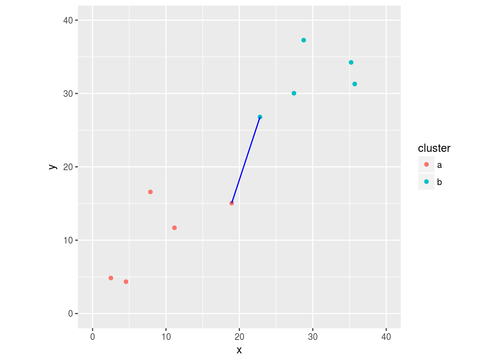
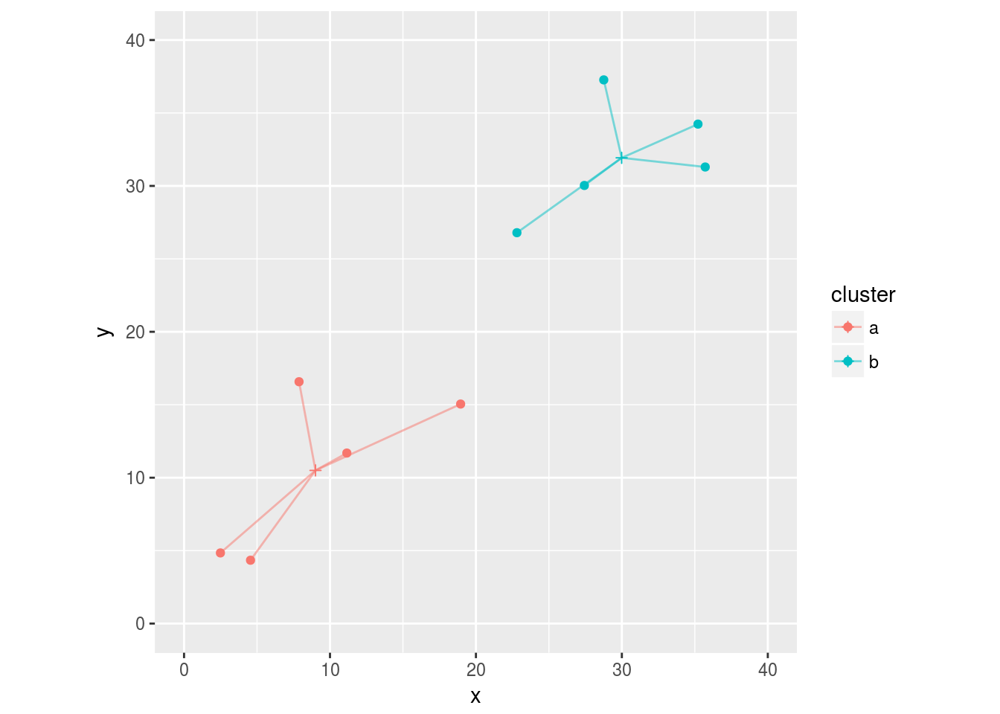
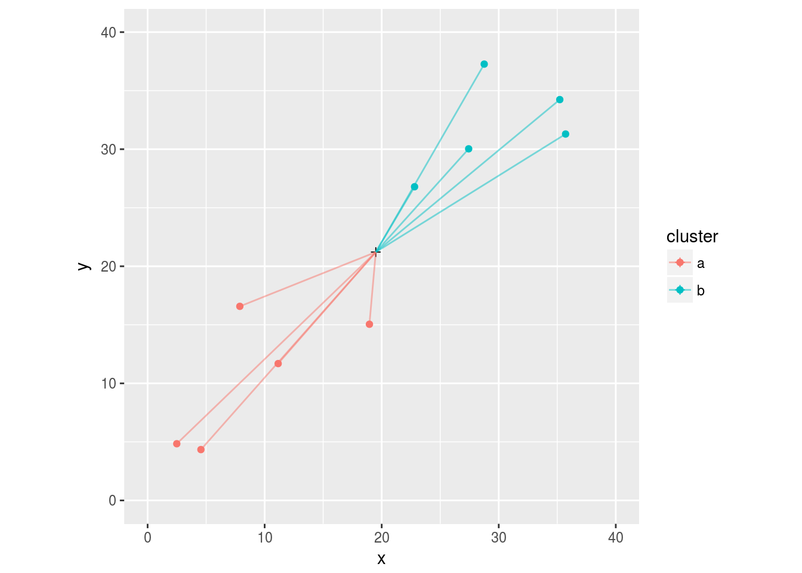
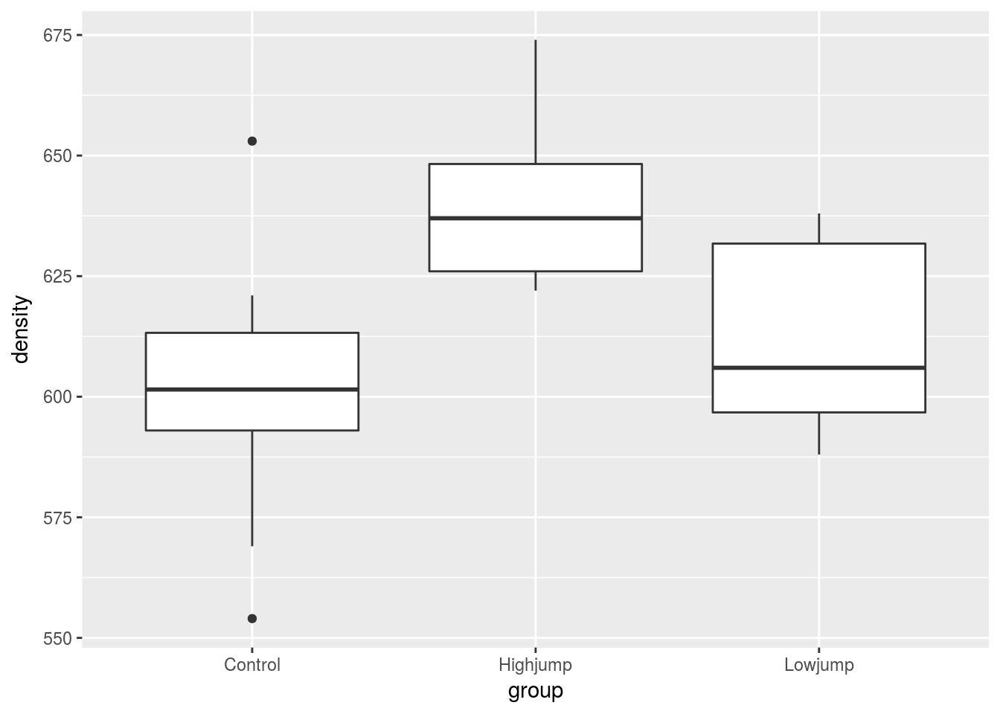
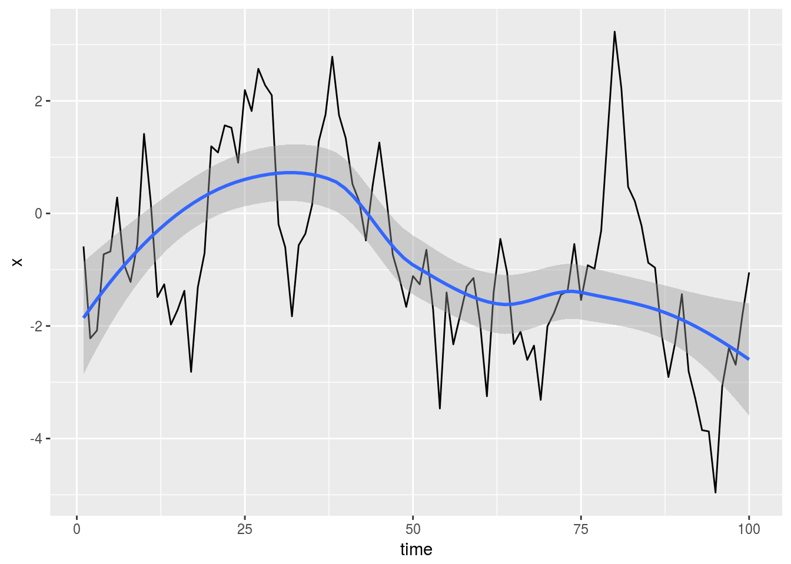

Ward's method and dissimilarities
Introduction
I don’t know yet where this post is going. Think of it, for now, as a ramble through cluster analysis. I may eventually figure out what to do with it, but I don’t want to delete what I have written just yet.
Hierarchical clustering is a way of forming groups or “clusters” of like individuals. The various forms of hierarchical clustering work from distances or dissimilarilities between individuals. The process is to start from each individual in a cluster by itself and then to join the closest pair of clusters one by one until all individuals are in a single cluster. To use the clustering, a tree diagram or “dendrogram” is drawn and the tree is “chopped” at an appropriate number of clusters.
Clustering methods
The various forms of hierarchical clustering differ in the way they turn a distance between individuals into a distance between clusters. and define a distance between clusters from this.
Start by loading the tidyverse:
library(tidyverse)## ── Attaching packages ─────────────────────────────────────────────────────────────────────────── tidyverse 1.2.1 ──## ✔ ggplot2 2.2.1.9000 ✔ purrr 0.2.4
## ✔ tibble 1.4.2 ✔ dplyr 0.7.4
## ✔ tidyr 0.8.0 ✔ stringr 1.3.0
## ✔ readr 1.1.1 ✔ forcats 0.3.0## ── Conflicts ────────────────────────────────────────────────────────────────────────────── tidyverse_conflicts() ──
## ✖ dplyr::filter() masks stats::filter()
## ✖ dplyr::lag() masks stats::lag()For example, suppose we are considering Euclidean distance as dissimilarity, and we have some points in the \((x,y)\) plane like this. I’m showing you the R code to make these plots, for completeness, but you should feel free to ignore it and just look at the pictures:
set.seed(457299)
a=data.frame(x=runif(5,0,20),y=runif(5,0,20))
b=data.frame(x=runif(5,20,40),y=runif(5,20,40))
ddd=bind_rows(a=a,b=b,.id="cluster")
g=ggplot(ddd,aes(x=x,y=y,colour=cluster))+geom_point()+
coord_fixed(xlim=c(0,40),ylim=c(0,40))
g
To measure the distance between the red cluster and the blue cluster, we might consider the closest distance between a red and a blue:
distance=function(p1,p2) {
sqrt((p1[1]-p2[1])^2+(p1[2]-p2[2])^2)
}
distances=matrix(0,nrow(a),nrow(b))
for (i in 1:nrow(a)) {
for (j in 1:nrow(b)) {
dd=distance(a[i,],b[j,])
distances[i,j]=dd
}
}
wm1=which.min(apply(distances,1,min))
wm2=which.min(apply(distances,2,min))
closest=bind_rows(a=a[wm1,],b=b[wm2,],.id="cluster")
# single linkage distance
g+geom_segment(data=closest,aes(x=x[1],y=y[1],xend=x[2],yend=y[2]),colour="blue")
the so-called single-linkage distance, or the farthest distance between a red and a blue:
wm1=which.max(apply(distances,1,max))
wm2=which.max(apply(distances,2,max))
closest=bind_rows(a[wm1,],b[wm2,],.id="cluster")
g+geom_segment(data=closest,aes(x=x[1],y=y[1],xend=x[2],yend=y[2]),colour="blue")
the complete-linkage distance. Another option, that often works well in practice, is “Ward’s method.” This is most easily understood by thinking of the means of coordinates, for each group individually:

and for the two groups combined:
ddd %>% summarize(x=mean(x),y=mean(y)) -> dm
# loop through data frame and create grp that links to cluster's mean
new=data.frame(x=double(),y=double(),cluster=character(),grp=integer(),
stringsAsFactors = F)
count=0;
for (i in 1:5) {
count=count+1
new[2*count-1,]=c(a[i,],cluster="a",grp=count)
new[2*count,]=c(dm[1,],cluster="a",grp=count)
count=count+1
new[2*count-1,]=c(b[i,],cluster="b",grp=count)
new[2*count,]=c(dm[1,],cluster="b",grp=count)
}
ggplot(ddd,aes(x=x,y=y,colour=cluster))+
coord_fixed(xlim=c(0,40),ylim=c(0,40))+
geom_point()+
geom_point(data=dm,aes(colour=NULL),shape=3)+
geom_line(data=new,aes(group=grp),alpha=0.5)
The Ward distance is the difference between the sum of squared distances in the second case vs. the first case. Here, the distances from the combined mean are a lot bigger than from the individual cluster means, so the Ward distance between the two clusters is large.
But, if we don’t have coordinates from which the distances come, how do we define the cluster means, and thus how do we make Ward’s method go?
Re-thinking Ward
Ward, as seen above, is like analysis of variance in that it compares dispersion within clusters (the first Ward graph above) to total dispersion (the second graph). The total dispersion will always be bigger, but if the clusters are close to each other, it will not be much bigger.
I remembered that the variance can also be written as a measure of how dispersed the individuals are from each other. As a way of motivating that idea, let’s imagine that we have observations \(x_i\), \(i=1,2,\ldots,n\) on a variable \(x\), and let’s take the sum of squared differences between each observation and each other observation. I’m including the differences between observations and themselves, and the differences both ways around, to make the algebra easier:
\[\begin{eqnarray*} \sum_i \sum_j (x_i-x_j)^2 &=& \sum_i \sum_j (x_i^2- 2 x_i x_j+ x_j^2) \\ &=& \sum_i (nx_i^2 -2n x_i \bar{x} + T)\\ &=& nT - 2n^2 \bar{x}^2 + nT\\ &=& 2n ( T - n \bar{x}^2)\\ &=& 2n(n-1)s^2 \end{eqnarray*}\]where \(T=\sum_i x_i^2\) and \(s^2\) is the usual sample variance.
This shows that there is a simple relationship between the variance and the sum of squared differences between the observations.
Why is that important? Well, the variance requires a mean, but the sum of squared differences does not. This means that a variance is still meaningful if we think (in cluster analysis terms) of dissimilarities between individuals, even if the mean doesn’t make sense.
Application to Ward’s method
One simple way to measure a dissimilarity between two languages (written in the same alphabet) is to write down their words for 1 through 10, and count up how many of those words begin with different letters. I did this for 11 European languages. Here are the results:
my_url="http://www.utsc.utoronto.ca/~butler/d29/languages.txt"
number.d=read_table(my_url)## Parsed with column specification:
## cols(
## la = col_character(),
## en = col_integer(),
## no = col_integer(),
## dk = col_integer(),
## nl = col_integer(),
## de = col_integer(),
## fr = col_integer(),
## es = col_integer(),
## it = col_integer(),
## pl = col_integer(),
## hu = col_integer(),
## fi = col_integer()
## )number.d## # A tibble: 11 x 12
## la en no dk nl de fr es it pl hu fi
## <chr> <int> <int> <int> <int> <int> <int> <int> <int> <int> <int> <int>
## 1 en 0 2 2 7 6 6 6 6 7 9 9
## 2 no 2 0 1 5 4 6 6 6 7 8 9
## 3 dk 2 1 0 6 5 6 5 5 6 8 9
## 4 nl 7 5 6 0 5 9 9 9 10 8 9
## 5 de 6 4 5 5 0 7 7 7 8 9 9
## 6 fr 6 6 6 9 7 0 2 1 5 10 9
## 7 es 6 6 5 9 7 2 0 1 3 10 9
## 8 it 6 6 5 9 7 1 1 0 4 10 9
## 9 pl 7 7 6 10 8 5 3 4 0 10 9
## 10 hu 9 8 8 8 9 10 10 10 10 0 8
## 11 fi 9 9 9 9 9 9 9 8 9 8 0See the Appendix for how I got these numbers in the first place.
This needs to be turned into a dist object for input to hclust. The numbers are already dissimilarities, so as.dist is needed. First we take off the column of language names:
dd = number.d %>% select(-la) %>% as.dist()
dd## en no dk nl de fr es it pl hu
## no 2
## dk 2 1
## nl 7 5 6
## de 6 4 5 5
## fr 6 6 6 9 7
## es 6 6 5 9 7 2
## it 6 6 5 9 7 1 1
## pl 7 7 6 10 8 5 3 4
## hu 9 8 8 8 9 10 10 10 10
## fi 9 9 9 9 9 9 9 8 9 8and then obtain the clustering. This form uses Ward’s original method. and I now realize that I taught my class the wrong one, since I used ward.D.
lang.1=hclust(dd,method="ward.D2")and then draw a dendrogram:
plot(lang.1)
To me, this suggests three language clusters, these:
plot(lang.1)
rect.hclust(lang.1,3)
This is rather pleasing from a linguistic point of view. From left to right, we have a cluster of three Romance (Latin-based) languages and the most Latin-like of the Slavic languages; then we have five Germanic languages, English counts as a Germanic language from this point of view because the number words are very old, predating the Norman conquest from which most of English’s Latin-derived words date. and finally the “Finno-Ugric” languages. This is a bit of a cheat, since Finnish and Hungarian are not very similar at all, but they are (just about) more like each other than they are like anything else.
**** continue with some calculation of within-cluster sums of squares and consideration of height
lang.1$merge## [,1] [,2]
## [1,] -2 -3
## [2,] -6 -8
## [3,] -7 2
## [4,] -1 1
## [5,] -9 3
## [6,] -4 -5
## [7,] 4 6
## [8,] -10 -11
## [9,] 7 8
## [10,] 5 9Appendix: the languages data
The words for 1–10 in eleven European languages are shown here, separated by single spaces:
my_url="http://www.utsc.utoronto.ca/~butler/d29/one-ten.txt"
lang=read_delim(my_url," ")## Parsed with column specification:
## cols(
## en = col_character(),
## no = col_character(),
## dk = col_character(),
## nl = col_character(),
## de = col_character(),
## fr = col_character(),
## es = col_character(),
## it = col_character(),
## pl = col_character(),
## hu = col_character(),
## fi = col_character()
## )lang ## # A tibble: 10 x 11
## en no dk nl de fr es it pl hu fi
## <chr> <chr> <chr> <chr> <chr> <chr> <chr> <chr> <chr> <chr> <chr>
## 1 one en en een eins un uno uno jeden egy yksi
## 2 two to to twee zwei deux dos due dwa ketto kaksi
## 3 three tre tre drie drei trois tres tre trzy harom kolme
## 4 four fire fire vier vier quatre cuatro quattro cztery negy nelja
## 5 five fem fem vijf funf cinq cinco cinque piec ot viisi
## 6 six seks seks zes sechs six seis sei szesc hat kuusi
## 7 seven sju syv zeven sieben sept siete sette siedem het seit…
## 8 eight atte otte acht acht huit ocho otto osiem nyolc kahd…
## 9 nine ni ni negen neun neuf nueve nove dziew… kile… yhde…
## 10 ten ti ti tien zehn dix diez dieci dzies… tiz kymm…It would be a lot easier to extract the first letter if the number names were all in one column. When all you have is gather, everything looks like a wide data frame.
lang.long = lang %>% mutate(number=row_number()) %>%
gather(language,name,-number) %>%
mutate(first=str_sub(name,1,1))
lang.long ## # A tibble: 110 x 4
## number language name first
## <int> <chr> <chr> <chr>
## 1 1 en one o
## 2 2 en two t
## 3 3 en three t
## 4 4 en four f
## 5 5 en five f
## 6 6 en six s
## 7 7 en seven s
## 8 8 en eight e
## 9 9 en nine n
## 10 10 en ten t
## # ... with 100 more rowsDissimilarity between English and Norwegian is the number of first letters that are different.
First get the lines for English:
english = lang.long %>% filter(language=="en")
english## # A tibble: 10 x 4
## number language name first
## <int> <chr> <chr> <chr>
## 1 1 en one o
## 2 2 en two t
## 3 3 en three t
## 4 4 en four f
## 5 5 en five f
## 6 6 en six s
## 7 7 en seven s
## 8 8 en eight e
## 9 9 en nine n
## 10 10 en ten t- and then the lines for Norwegian:
norwegian = lang.long %>% filter(language=="no")
norwegian## # A tibble: 10 x 4
## number language name first
## <int> <chr> <chr> <chr>
## 1 1 no en e
## 2 2 no to t
## 3 3 no tre t
## 4 4 no fire f
## 5 5 no fem f
## 6 6 no seks s
## 7 7 no sju s
## 8 8 no atte a
## 9 9 no ni n
## 10 10 no ti tAnd now we want to put them side by side, matched by number. This is
what left_join does:
english %>% left_join(norwegian, by="number")## # A tibble: 10 x 7
## number language.x name.x first.x language.y name.y first.y
## <int> <chr> <chr> <chr> <chr> <chr> <chr>
## 1 1 en one o no en e
## 2 2 en two t no to t
## 3 3 en three t no tre t
## 4 4 en four f no fire f
## 5 5 en five f no fem f
## 6 6 en six s no seks s
## 7 7 en seven s no sju s
## 8 8 en eight e no atte a
## 9 9 en nine n no ni n
## 10 10 en ten t no ti tfirst.x is 1st letter of English word, first.y 1st
letter of Norwegian word.
Create a column saying whether or not the first letters are different, then count them by summing up 1 for TRUE and 0 for FALSE:
english %>% left_join(norwegian, by="number") %>%
mutate(different=(first.x!=first.y)) %>%
summarize(diff=sum(different))## # A tibble: 1 x 1
## diff
## <int>
## 1 2Words for 1 and 8 start with different letter; rest are same.
Write this as a function to do it for any two languages:
countdiff=function(lang.1,lang.2,d) {
lang1d=d %>% filter(language==lang.1)
lang2d=d %>% filter(language==lang.2)
lang1d %>% left_join(lang2d, by="number") %>%
mutate(different=(first.x!=first.y)) %>%
summarize(diff=sum(different)) %>%
pull(diff)
}Test:
countdiff("en","no",lang.long)## [1] 2For all pairs of languages:
- First need all the languages:
languages=names(lang)
languages## [1] "en" "no" "dk" "nl" "de" "fr" "es" "it" "pl" "hu" "fi"- and then all pairs of languages:
pairs=crossing(lang=languages, lang2=languages) Run countdiff for all those language pairs:
thediffs = pairs %>%
mutate(diff=map2_int(lang,lang2,countdiff,lang.long)) %>%
print(n=12)## # A tibble: 121 x 3
## lang lang2 diff
## <chr> <chr> <int>
## 1 de de 0
## 2 de dk 5
## 3 de en 6
## 4 de es 7
## 5 de fi 9
## 6 de fr 7
## 7 de hu 9
## 8 de it 7
## 9 de nl 5
## 10 de no 4
## 11 de pl 8
## 12 dk de 5
## # ... with 109 more rowsMake square table of these by (finally) undoing the gather:
thediffs %>% spread(lang2,diff)## # A tibble: 11 x 12
## lang de dk en es fi fr hu it nl no pl
## <chr> <int> <int> <int> <int> <int> <int> <int> <int> <int> <int> <int>
## 1 de 0 5 6 7 9 7 9 7 5 4 8
## 2 dk 5 0 2 5 9 6 8 5 6 1 6
## 3 en 6 2 0 6 9 6 9 6 7 2 7
## 4 es 7 5 6 0 9 2 10 1 9 6 3
## 5 fi 9 9 9 9 0 9 8 9 9 9 9
## 6 fr 7 6 6 2 9 0 10 1 9 6 5
## 7 hu 9 8 9 10 8 10 0 10 8 8 10
## 8 it 7 5 6 1 9 1 10 0 9 6 4
## 9 nl 5 6 7 9 9 9 8 9 0 5 10
## 10 no 4 1 2 6 9 6 8 6 5 0 7
## 11 pl 8 6 7 3 9 5 10 4 10 7 0And that is the data set we were working with.